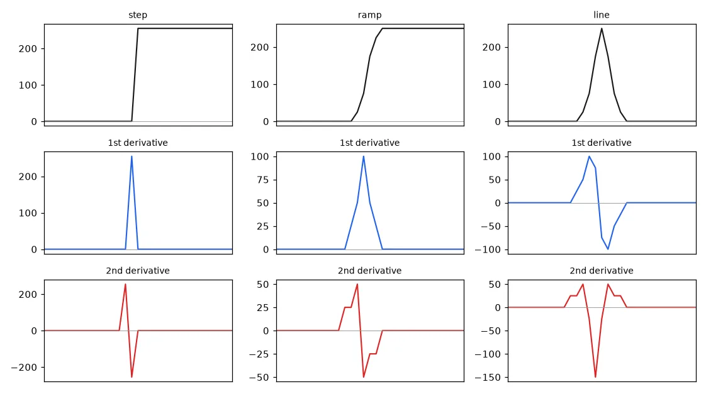
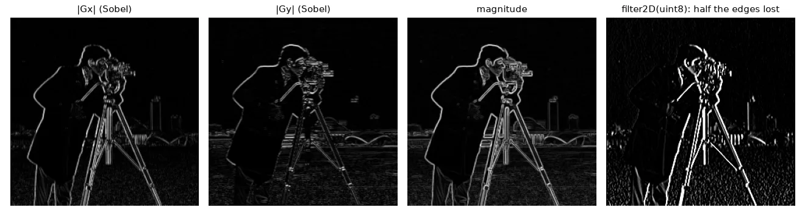
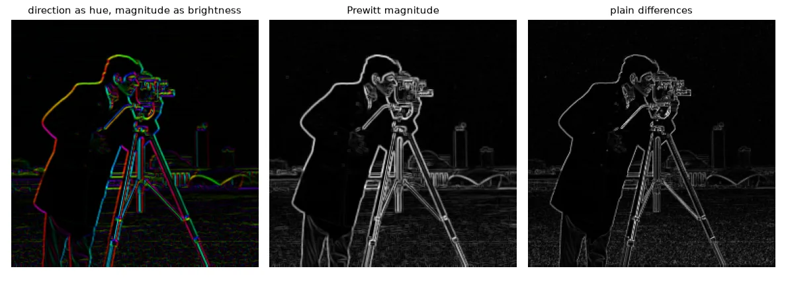
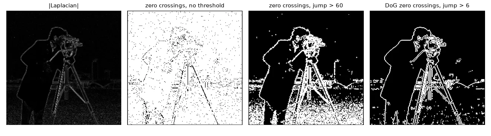
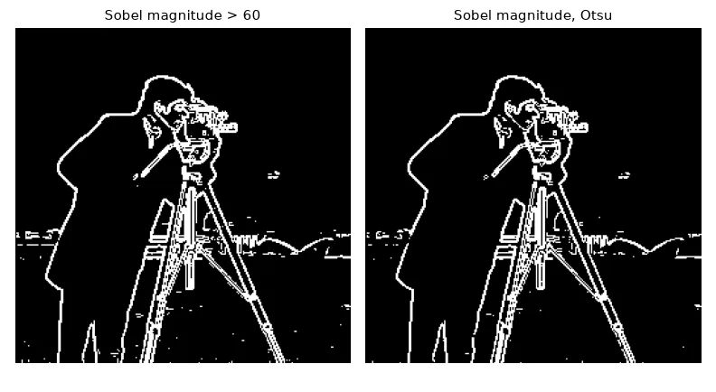
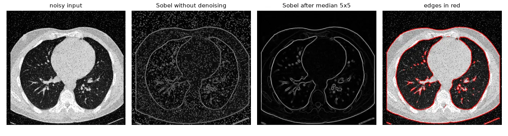

Edges in one dimension#
Take one row of an image. An edge is a jump in intensity. Its derivative — for discrete signals, the difference between neighbours, np.diff — is:
- a peak at the edge, for the first derivative;
- a positive/negative pair that crosses zero at the edge, for the second derivative.
step = np.r_[np.zeros(50), np.full(50, 255)] # sharp edge
ramp = np.r_[np.zeros(48), [25, 75, 175, 225], np.full(48, 250)] # smooth edge
line = np.r_[np.zeros(47), [25, 75, 175, 250, 175, 75, 25], np.zeros(46)] # thin line
d1 = np.diff(ramp) # first derivative: a peak on the edge
d2 = np.diff(ramp, n=2) # second derivative: + then -, crossing zero on the edge

So there are two families of edge detectors: look for maxima of the first derivative, or for zero crossings of the second.
The gradient#
In 2-D, the first derivative becomes the gradient, a vector of two partial derivatives:
The magnitude says how strong the edge is, the direction is perpendicular to the edge. Plain differences \(I(x+1) - I(x)\) are very sensitive to noise, so practical operators combine a derivative in one direction with a smoothing in the other. Prewitt smooths with \([1, 1, 1]\), Sobel with \([1, 2, 1]\):
f = img.astype(np.float32) # derivatives are signed: never compute them in uint8
dx = np.zeros_like(f)
dy = np.zeros_like(f)
dx[:, :-1] = np.diff(f, axis=1) # I(x+1, y) - I(x, y)
dy[:-1, :] = np.diff(f, axis=0) # I(x, y+1) - I(x, y)
sobel_x = np.array([[-1, 0, 1], [-2, 0, 2], [-1, 0, 1]], np.float32)
prewitt_x = np.array([[-1, 0, 1], [-1, 0, 1], [-1, 0, 1]], np.float32)
gx = cv2.filter2D(f, cv2.CV_32F, sobel_x) # ddepth=CV_32F keeps negative values
gy = cv2.filter2D(f, cv2.CV_32F, sobel_x.T)
magnitude = np.hypot(gx, gy) # sqrt(gx² + gy²); |gx| + |gy| is a cheaper variant
direction = np.arctan2(gy, gx) # radians, perpendicular to the edge
# OpenCV shortcut, same numbers:
gx_cv = cv2.Sobel(f, cv2.CV_32F, 1, 0, ksize=3)
The classic bug
cv2.filter2D(img, -1, kernel) on a uint8 image returns uint8: every negative response is clipped to 0. Half of the edges (those going from bright to dark) disappear. Always ask for a float output (cv2.CV_32F, or cv2.CV_64F with cv2.Sobel).


Second derivatives: the Laplacian#
The Laplacian sums the two second derivatives, \(\nabla^2 I = \partial^2 I/\partial x^2 + \partial^2 I/\partial y^2\), and is approximated by
(sign conventions vary; only the zero crossings matter). It is isotropic — one kernel, no direction — but differentiating twice amplifies noise twice. The fix is to smooth first: the Laplacian of Gaussian (LoG), well approximated by the Difference of Gaussians (DoG), the same band-pass filter SIFT uses to find blobs in lesson 12.
lap4 = np.array([[0, -1, 0], [-1, 4, -1], [0, -1, 0]], np.float32)
lap8 = np.array([[-1, -1, -1], [-1, 8, -1], [-1, -1, -1]], np.float32)
laplacian = cv2.filter2D(f, cv2.CV_32F, lap4)
def gaussian_kernel(size, sigma):
ax = np.arange(size) - size // 2
xx, yy = np.meshgrid(ax, ax)
k = np.exp(-(xx ** 2 + yy ** 2) / (2 * sigma ** 2))
return k / k.sum()
# Difference of Gaussians: a band-pass filter that approximates the Laplacian of Gaussian
dog = (cv2.filter2D(f, cv2.CV_32F, gaussian_kernel(9, 1.0))
- cv2.filter2D(f, cv2.CV_32F, gaussian_kernel(9, 1.6)))
Finding zero crossings#
A pixel is on an edge if one of its 4 neighbours has the opposite sign and the jump between them is large enough — without that second condition, every tiny ripple of noise around zero becomes an "edge".
def zero_crossings(resp, min_jump):
"""Edge where the sign changes between 4-neighbours AND the jump is large enough."""
edges = np.zeros(resp.shape, bool)
c = resp[1:-1, 1:-1]
for n in (resp[:-2, 1:-1], resp[2:, 1:-1], resp[1:-1, :-2], resp[1:-1, 2:]):
edges[1:-1, 1:-1] |= (np.sign(c) != np.sign(n)) & (np.abs(c - n) > min_jump)
return edges

First-order edges: threshold the magnitude#
For first-order operators, edges are bright ridges of the magnitude, so a threshold is enough; Otsu's method picks it automatically by splitting the histogram into two classes with minimal variance.
def threshold(x, t):
return (x >= t).astype(np.uint8) * 255
mag_u8 = to_u8(magnitude)
edges_sobel = threshold(mag_u8, 60)
_, edges_otsu = cv2.threshold(mag_u8, 0, 255, cv2.THRESH_BINARY + cv2.THRESH_OTSU)

| First order (Sobel, Prewitt) | Second order (Laplacian, DoG) | |
|---|---|---|
| Edge = | maximum of $ | \nabla I |
| Gives | magnitude and direction | position only, no direction |
| Edges are | thick, need thinning | thin and closed |
| Noise | sensitive | very sensitive (smooth first) |
A complete pipeline: noisy CT scan#
A real processing chain has three parts: pre-processing (fix the image), processing (extract the information), display. The CT slice below has salt-and-pepper noise, so lesson 05 tells us to start with a median filter:
brain = U.imread("noise/noisy_brain.png", cv2.IMREAD_GRAYSCALE)
den = cv2.medianBlur(brain, 5) # 1. pre-processing: S&P noise
gx = cv2.Sobel(den, cv2.CV_32F, 1, 0) # 2. processing: gradient
gy = cv2.Sobel(den, cv2.CV_32F, 0, 1)
mag = to_u8(np.hypot(gx, gy))
_, edges = cv2.threshold(mag, 0, 255, cv2.THRESH_BINARY + cv2.THRESH_OTSU)
overlay = cv2.cvtColor(brain, cv2.COLOR_GRAY2BGR) # 3. display: edges in red
overlay[edges > 0] = (0, 0, 255)

Exercises#
- Compare \(|G_x| + |G_y|\) and \(\sqrt{G_x^2 + G_y^2}\): where do they differ most? (Hint: diagonal edges.)
- Replace the DoG with
cv2.Laplacian(cv2.GaussianBlur(f, (0, 0), 1.5), cv2.CV_32F)and tune the zero-crossing jump. - Draw the edges of
noisy_brain.pngin a different colour depending on the gradient direction (4 bins).